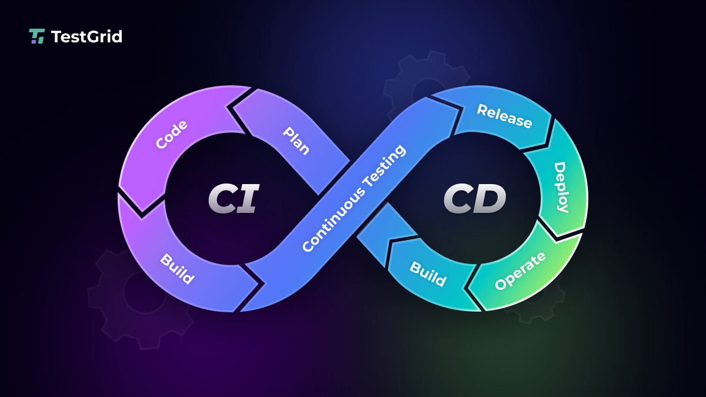
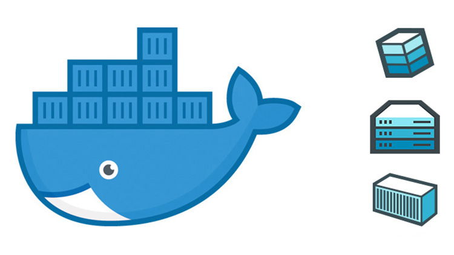
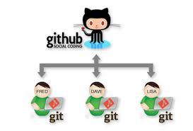
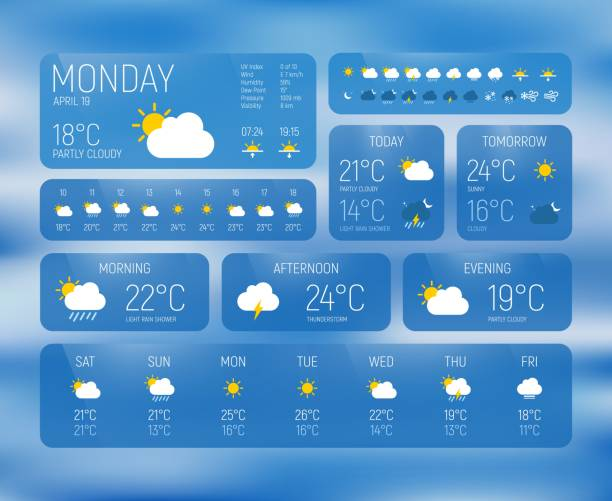

Architectures Built

CI/CD Pipeline Automation
Automated pipeline configurations leveraging Jenkins core routines and continuous verification cycles via GitHub Actions hooks.
Verify Architecture
Dockerized Application
Containerizing microservices patterns to enforce target operational profiles cleanly across multiple host system layouts.
Verify ArchitectureKubernetes Deployment
Mapping declarative state schemas into high-availability clusters ensuring zero-downtime rolling upgrades.
Verify ArchitectureBash Scripting Automation
Developing shell scripts for automatic storage lifecycle cleanup operations, system log generation, and remote node monitoring.
Verify ArchitectureLinux Server Monitoring & Alerts
Building daemon processing loops tracking memory boundaries and issuing immediate communications flags upon threshold violations.
Verify Architecture
Git Workflow Design
Standardizing modern branching mechanisms using automated webhooks checking integration states dynamically before pipeline deployment.
Verify ArchitectureIaC Architecture Provisioning
Automating complete multi-tier network instances setup safely over cloud architectures using structured Terraform states.
Verify Architecture
Linux Server Operations
Setting up baseline server instances, updating key configuration matrices, and locking down ports against vector vulnerabilities.
Verify ArchitectureMERN Notes Application
Full stack multi-user data workspace engineered using granular application controls during 10Pearls internship cycle.
Verify ArchitectureSecure REST API Development
Building modern database routers serving signed authorization objects with zero token leakage vulnerabilities.
Verify Architecture
Atmospheric Telemetry Site
Real-time location data client polling remote atmospheric weather systems via async promises processing structures.
Verify ArchitectureBakery Platform UI
Highly dynamic, fully interactive user interface execution modeled collaboratively optimizing frontend caching states.
Verify Architecture